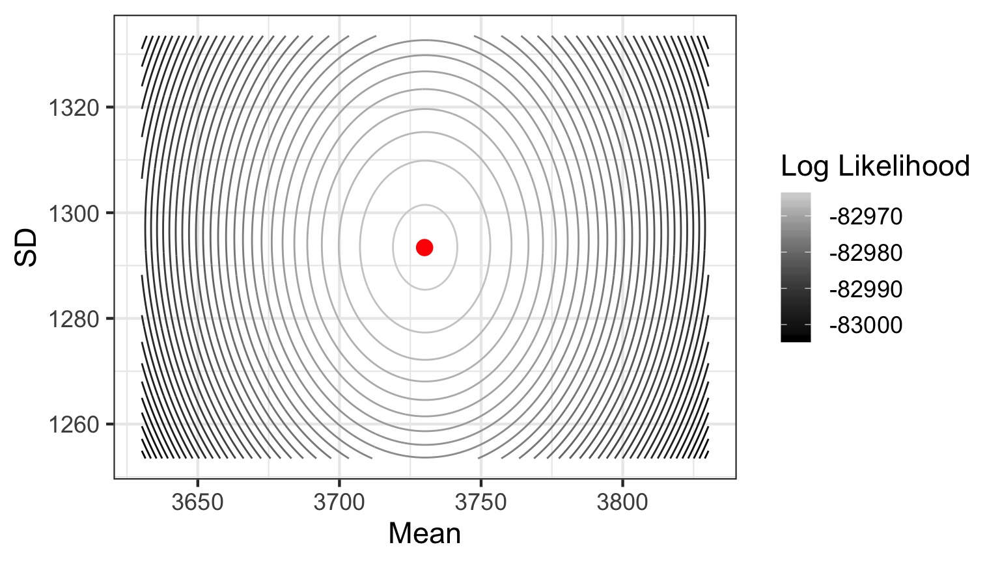
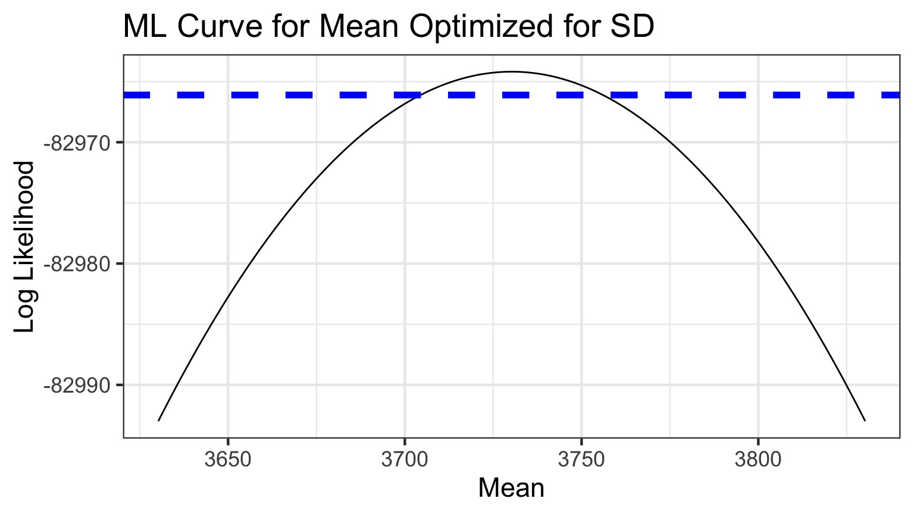
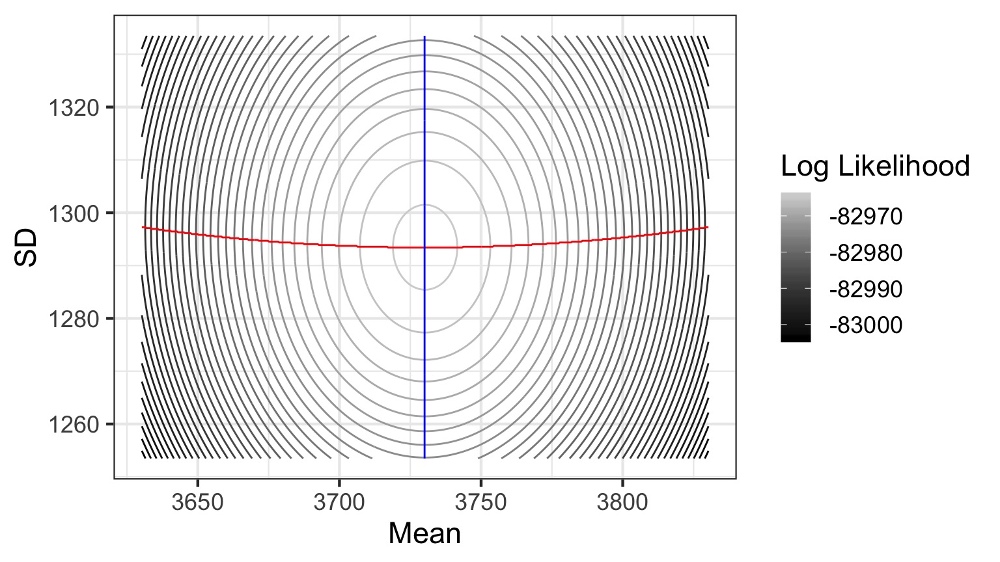

Likelihood!
Estimation with Likelihood!
Review
We test hypotheses using \(P(x \le Data | H)\)
We can fit models, then test them in this framework
We are awfully good at for simulation
Outline
- Introduction to Likelihood
- Maximum Likelihood
- Likelihood with Multiple Parameters
Deriving Truth from Data
- Frequentist Inference: Correct conclusion drawn from repeated experiments
- Uses p-values and CIs as inferential engine
- Likelihoodist Inference: Evaluate the weight of evidence for different hypotheses
- Derivative of frequentist mode of thinking
- Uses model comparison (sometimes with p-values…)
- Bayesian Inference: Probability of belief that is constantly updated
- Uses explicit statements of probability and degree of belief for inferences
Likelihood: how well data support a given hypothesis.
Note: Each and every parameter choice IS a hypothesis
Likelihood Defined
\[\Large L(H | D) = p(D | H)\]
Where the D is the data and H is the hypothesis (model) including a both a data generating process with some choice of parameters (aften called \(\theta\)). The error generating process is inherent in the choice of probability distribution used for calculation.
Thinking in Terms of Models and Likelihood
- First we have a Data Generating Process - This is our hypothesis about how the world works - \(\hat{y}_i = a + bx_i\)
- Then we have a likelihood of the data given this hypothesis - This allows us to calculate the likelihood of observing our data given the hypothesis - Called the Likelihood Function - \(y_{i} = N(\hat{y}_i, \sigma)\)
All Kinds of Likelihood functions
- Probability density functions are the most common
- But, hey, \(\sum(y_{i} - \hat{y}_i)^2\) is one as well
- Extremely flexible
- The key is a function that can find a minimum or maximum value, depending on your parameters
Likelihood of a Single Value
What is the likelihood of a value of 1.5 given a hypothesized Normal distribution where the mean is 0 and the SD is 1.
Likelihood of a Single Value
What is the likelihood of a value of 1.5 given a hypothesized Normal distribution where the mean is 0 and the SD is 1.
Likelihoodist v. P-Values
What is the likelihood of a value of 1.5 given a hypothesized Normal distribution where the mean is 0 and the SD is 1. 
Compare p(x = D | H) to p(x D | H)
Outline
- Introduction to Likelihood
- Maximum Likelihood
- Likelihood with Multiple Parameters
Maximum Likelihood
The Maximum Likelihood Estimate is the value at which \(p(D | \theta)\) - our likelihood function - is highest.
Note it depends on the explicit choice of parameters.
Example of Maximum Likelihood
Let’s say we have counted 10 individuals in a plot. Given that the population is Poisson distributed, what is the value of \(\lambda\)?
$$p(x) = \frac{\lambda^{x}e^{-\lambda}}{x!}$$
where we search all possible values of λ
Grid Sampling (setup a grid of values to test)
Maximum Log-Likelihood
We often maximize log-likelihood because of
1) more well behaved (\(\chi^2\)) properties of Log-Likelihood values and
2) rounding error
What about many data points?
Start with a Probability Distribution
$$p(x) = \frac{\lambda^{x}e^{-\lambda}}{x!}$$
What is the probability of the data given the parameter?
$$p(x) = \frac{\lambda^{x}e^{-\lambda}}{x!}$$
What is the probability of the data given the parameter?
p(a and b) = p(a)p(b)
$$p(D | \theta) = \prod_{i=1}^n p(d_{i} | \theta)$$
Can Compare p(Data | H) for alternate Parameter Values

Compare \(p(D|\theta_{1})\) versus \(p(D|\theta_{2})\)
Likelihood and Log-Likelihood With a Data Set

Maximum Likelihood: 1.331914410^{-11} at 17
Maximum Log Likelihood: -25.0418188 at 17
Likelihood and Bee Death!
We have Bee data mortality
We can model Bee Lifespans as a Gamma Distribution with shape = 1 (1 bee per death)
What is the ML estimate of a Bee’s Lifespan in hours?
The Gamma Distribution
- Defined by number of events(shape) average time to an event (scale)
- Think of time spent waiting for a bus to arrive
- Can also use rate (1/scale)
- \(Y \sim G(shape, scale)\)
Distribution of Mortality
Test Different Scale Values

Smoother Log Likelihood - but where’s the max?

Zooming in to the Peak
Max Log Likelihood = -142.7837018, Scale = 27.8693467
What is the Variation Around our Estimate?
Log-Likelihood appxomiately \(\chi^2\) distirbuted
95% CI holds all values within half of the .05 tail of \(\chi^{2}_{df=1}\)
- (\(\approx\) 1.92)
Profile Likelihoods to Search for Key Values
Log-Likelihood appxomiately \(\chi^2\) distirbuted
95% CI holds all values within half of the .05 tail of \(\chi^{2}_{df=1}\)
- (\(\approx\) 1.92)
CI Limits = 20.25, 39.9
What if you have multiple parameters?
Outline
- Introduction to Likelihood
- Maximum Likelihood
- Likelihood with Multiple Parameters
Mean Seal Age Distribution

What’s the distribution of ages in a seal colony?
Estimating Mean and SD: Likelihood Surface
Contour Plot of a Likelihood Surface

Estimates: mean = 3730.05, SD = 1293.4
New Issues with Multiple Parameters
What Log-Likelihood Values Are Used for 95% CI?
Grid Sampling Becomes Slow
Algorithmic Solutions Necessary
Specification of Likelihood Function Unwieldy
Profile CIs
- For each value of the parameter of interest, get the MLE of the other paramter
- Use this as your profile likelihood for your parameter
- Values of your parameter with a Log Likelihood 1.92 from the peak are in your CI
How do we get a likelihood profile?
Let’s say you have to parameters, b1 and b2 with MLE estimates.
- Setup a grid of values for b1 that you think span >95% CI
- For each value, get the MLE of b2. Record the MLL
- Now, plot the vaue of b1 versis the MLL and use this MLL profile to calculate your CI
- If you do not have a nice parabola, consider problems with model
Likelihood Profile of One Coefficient Along ML Estimates of the Other

Likelihood Profile of One Coefficient Along ML Estimates of the Other
Likelihood Profile of One Coefficient Along ML Estimates of the Other

Likelihood Profile of One Coefficient Along ML Estimates of the Other
Mean profile, SD Profile 
Likelihood Profile of One Coefficient Along ML Estimates of the Other
Mean profile, SD Profile

Likelihood Profile of One Coefficient Along ML Estimates of the Other
Mean profile, SD Profile

Likelihood Profiles to get CIs

2.5 % 97.5 %
mean 3704.364 3756.122
sd 1275.384 1311.887
How do we Search Likelihood Space?
Optimizing to find a Minimum Value
optim - wide variety of optimizers
nlm - Nonlinear Minimization
nlminb - Constrained Optimization
mle2 from bbmle (wrapper for all of the above)
Did You Say Minimum?
YES!
We optimize using -sum(LL Function)
Deviance = -2 * LL
Searching Likelihood Space
We use Algorithms
- Newtown-Raphson (algorithmicly implemented in nlm and BFGS method) uses derivatives
- good for smooth surfaces & good start values
- Brent’s Method - for single parameter fits
- Nelder-Mead Simplex (optim’s default)
- good for rougher surfaces, but slower
- Simulated Annealing (SANN) uses Metropolis Algorithm search
- global solution, but slow
Final Note on Searching Likelihood Space
If your algorithm fails to converge, you cannot evaluate your model or coefficients


.jpg)